老忠實間歇泉

NPS / Jacob W. Frank · Public domain
.jpg){kind=link}
NPS / Jacob W. Frank / Public domain (U.S. government work)
2018-01-15 11:53 · Resized proportionally; encoded as WebP; no generative editing.
Photos are licensed individually. Game code licensing does not replace image licenses. Depth reprojection is estimated, not measured 3D. All image changes are recorded below.
NPS / Jacob W. Frank · Public domain
NPS / Jacob W. Frank / Public domain (U.S. government work)
2018-01-15 11:53 · Resized proportionally; encoded as WebP; no generative editing.
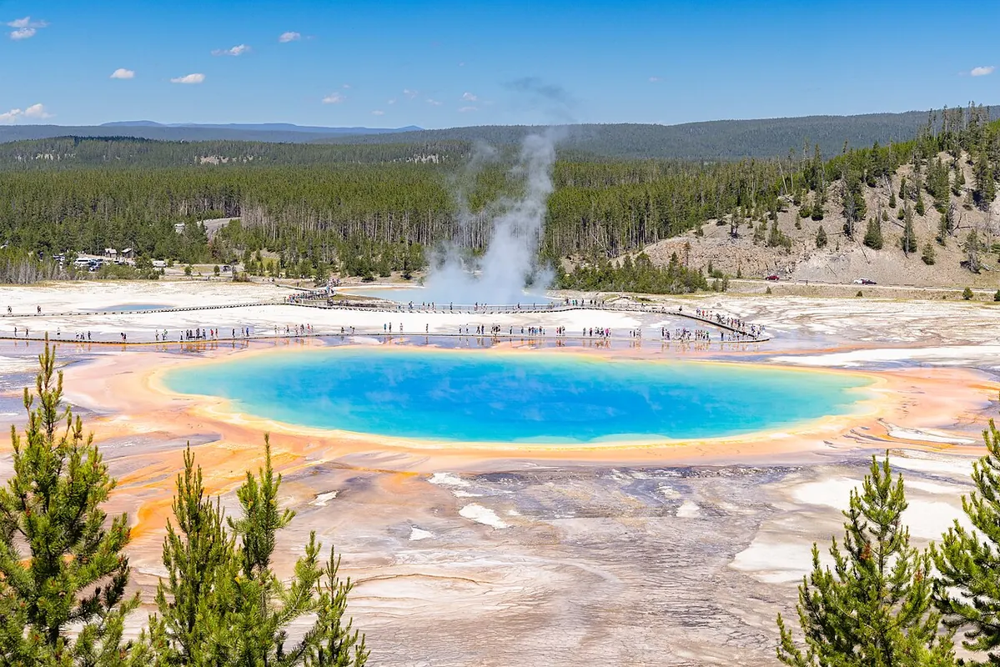
NPS / Jacob W. Frank · Public domain
NPS / Jacob W. Frank / Public domain (U.S. government work)
Taken on 19 July 2023, 14:42:23 · Resized proportionally; encoded as WebP; no generative editing.
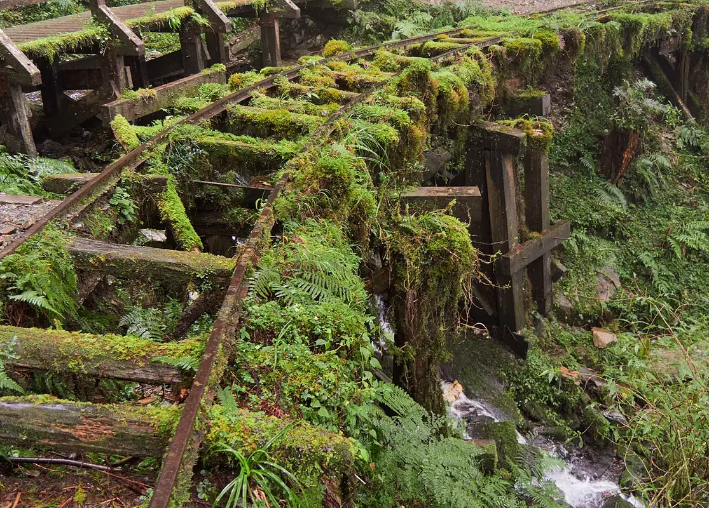
lumoplank · CC0
lumoplank / CC0
before 10 August 2025date QS:P,+2025-08-10T00:00:00Z/7,P1326,+2025-08-10T00:00:00Z/11 · Resized proportionally; encoded as WebP; no generative editing.
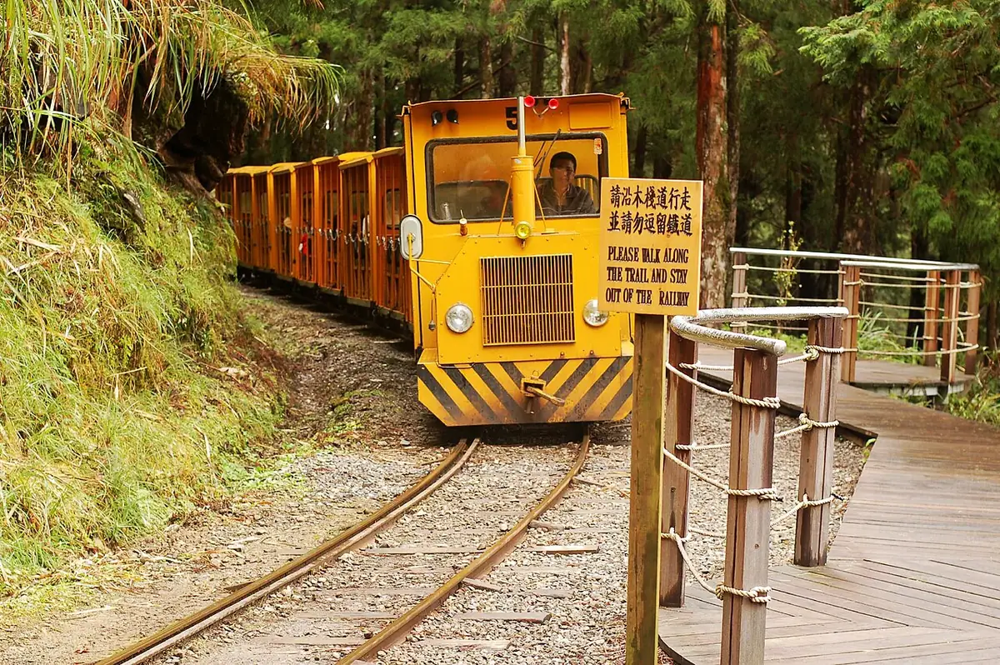
*嘟* · CC BY 2.0
*嘟* / CC BY 2.0
Uploaded to Flickr on 4 Dec 2007 by *嘟*, upload to commons by Quatro Valvole on 1 Jan 2008. · Resized proportionally; encoded as WebP; no generative editing.
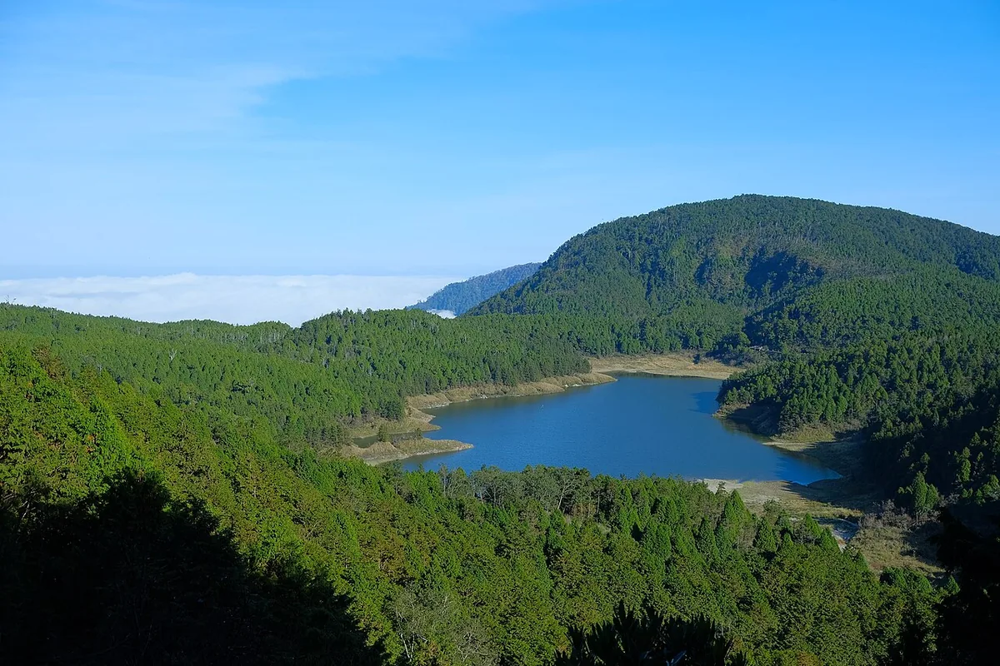
Taiwankengo · CC BY-SA 4.0
Taiwankengo / CC BY-SA 4.0
2019-11-10 15:02:09 · Resized proportionally; encoded as WebP; no generative editing.

Jason Zhang · CC0
Jason Zhang / CC0
2017-08-25 23:16:59 · Resized proportionally; encoded as WebP; no generative editing.

Gary Todd · CC0
Gary Todd / CC0
2017-12-08 09:36:39 · Resized proportionally; encoded as WebP; no generative editing.

Gary Todd from Xinzheng, China · CC0
Gary Todd from Xinzheng, China / CC0
2017-12-08 09:39 · Resized proportionally; encoded as WebP; no generative editing.

Born2bdigital304 · CC BY-SA 3.0
Born2bdigital304 / CC BY-SA 3.0
1973/12/?? · Resized proportionally; encoded as WebP; no generative editing.

lienyuan lee · CC BY 3.0
lienyuan lee / CC BY 3.0
Taken on 18 November 2012 · Resized proportionally; encoded as WebP; no generative editing.
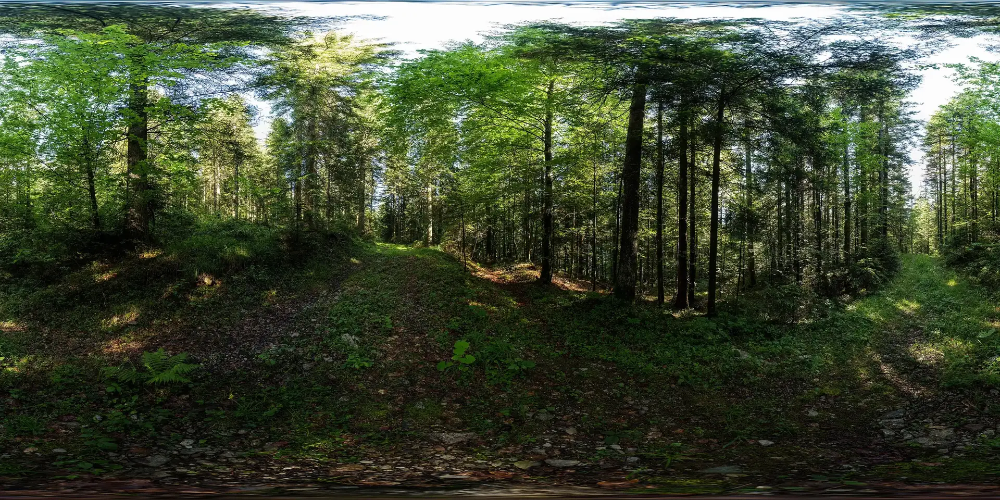
Ansgar Koreng · CC BY-SA 4.0
Ansgar Koreng / CC BY-SA 4.0
2016-06-20 18:17 · Resized proportionally; encoded as WebP; no generative editing.

OnionBulb · CC BY-SA 4.0
OnionBulb / CC BY-SA 4.0
2020-08-29 · Resized proportionally; encoded as WebP; no generative editing.

Mk2010 · CC BY-SA 4.0
Mk2010 / CC BY-SA 4.0
2017-09-16 21:42:29 · Resized proportionally; encoded as WebP; no generative editing.

阿道 · CC BY-SA 4.0
阿道 / CC BY-SA 4.0
2023-10-31 13:45:32 · Resized proportionally; encoded as WebP; no generative editing.
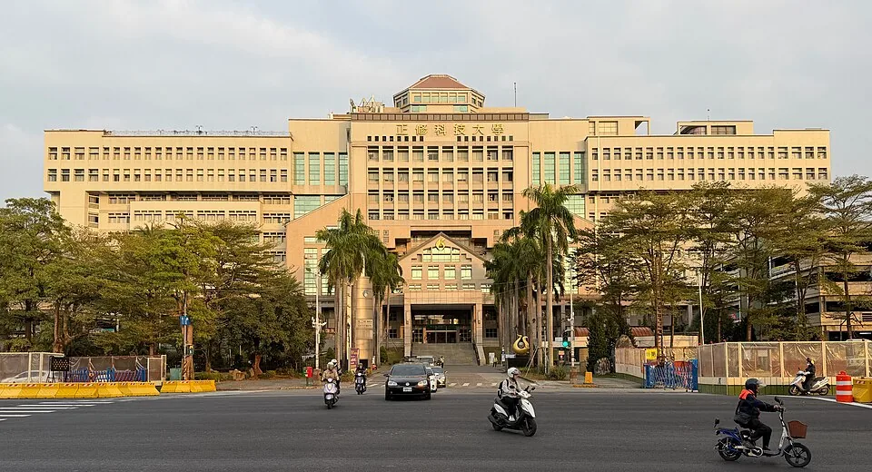
Yu tptw · CC BY-SA 4.0
Yu tptw / CC BY-SA 4.0
2026-02-09 17:05:06 · Resized proportionally to at most 960×720; encoded as WebP; no generative editing.
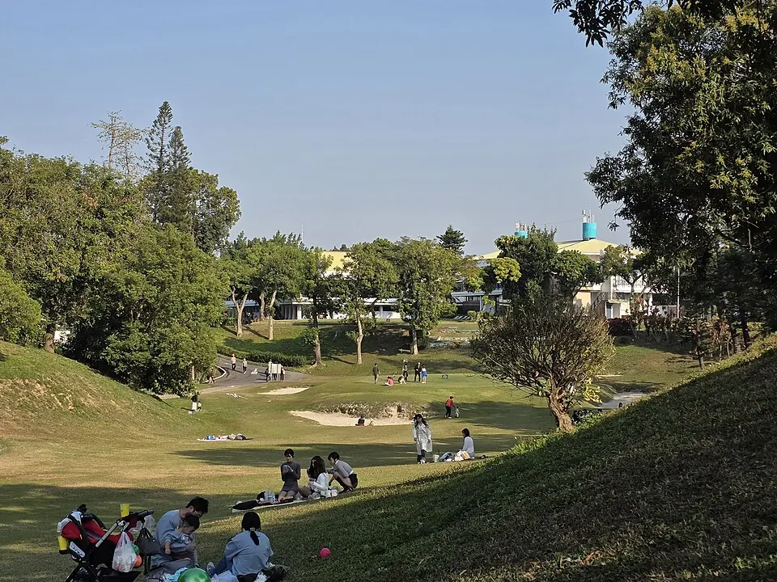
阿道 · CC BY-SA 4.0
阿道 / CC BY-SA 4.0
2026-01-14 15:06:43 · Resized proportionally to at most 960×720; encoded as WebP; no generative editing.
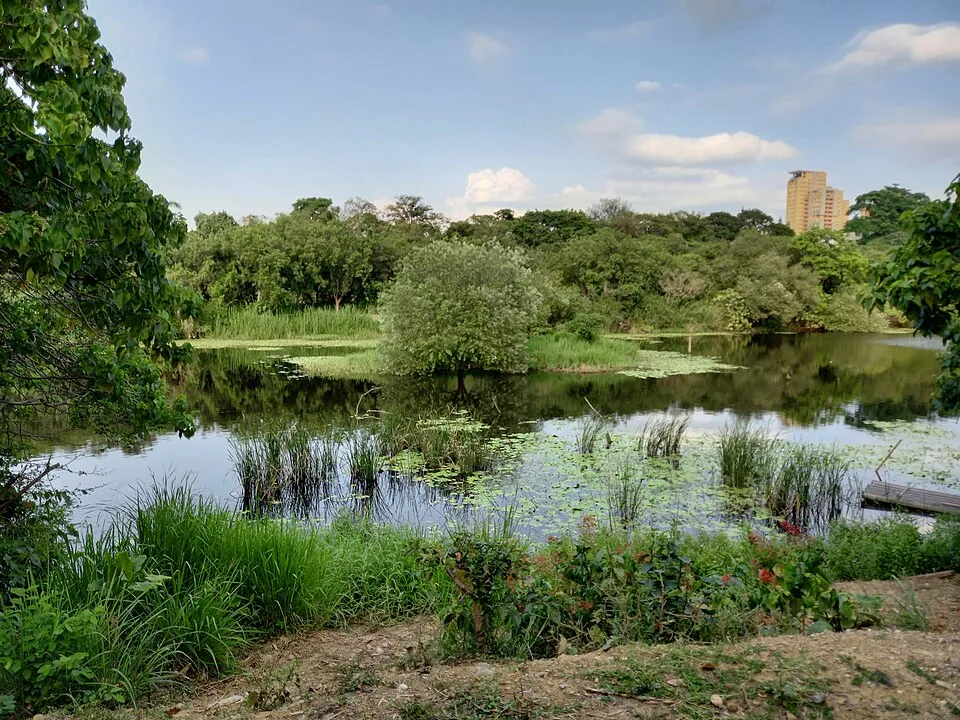
Sean Chiu · CC BY-SA 4.0
Sean Chiu / CC BY-SA 4.0
2024-04-30 16:44:23 · Resized proportionally to at most 960×720; encoded as WebP; no generative editing.
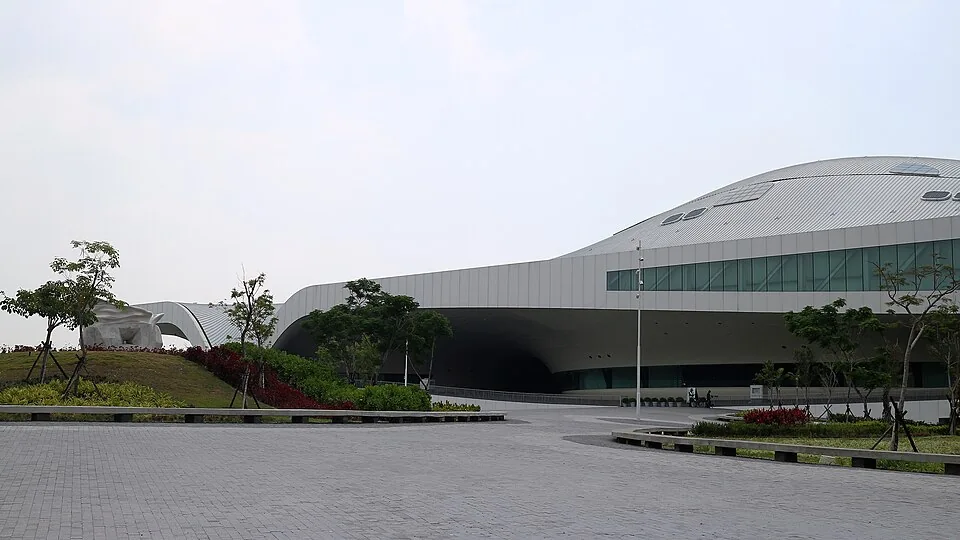
Jimmy3357569 · CC BY-SA 4.0
Jimmy3357569 / CC BY-SA 4.0
2018-03-30 · Resized proportionally to at most 960×720; encoded as WebP; no generative editing.
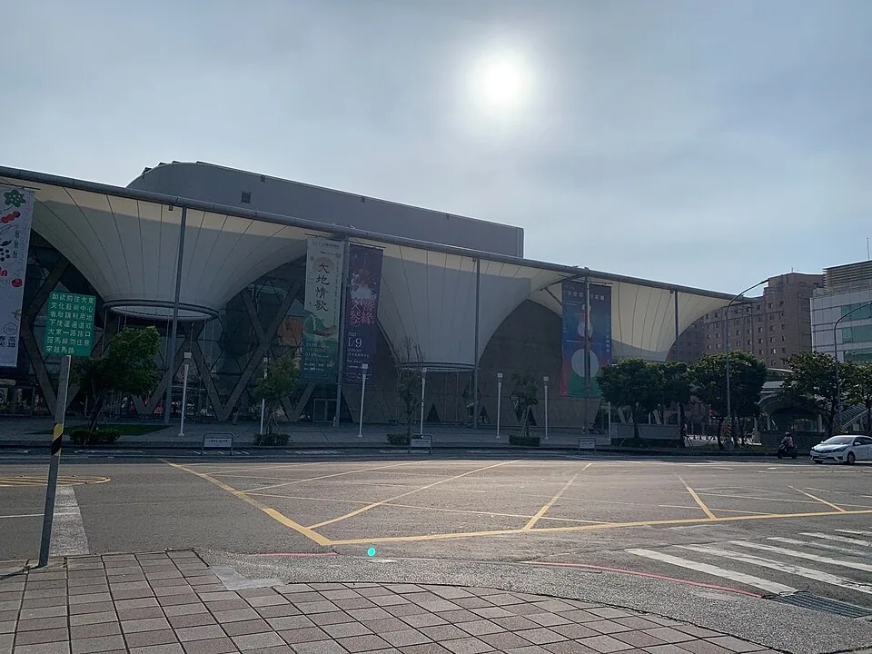
LingZhenWu · CC BY-SA 4.0
LingZhenWu / CC BY-SA 4.0
2021-12-15 · Resized proportionally to at most 960×720; encoded as WebP; no generative editing.
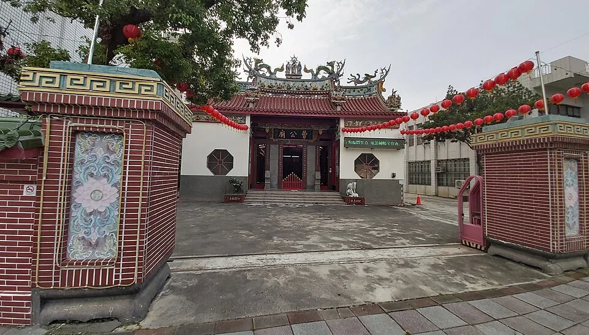
阿道 · CC BY-SA 4.0
阿道 / CC BY-SA 4.0
2024-11-11 14:53:22 · Resized proportionally to at most 960×720; encoded as WebP; no generative editing.
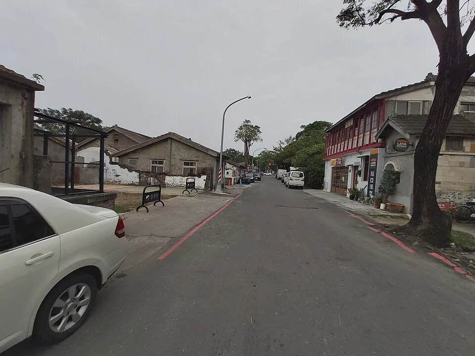
阿道 · CC BY-SA 4.0
阿道 / CC BY-SA 4.0
2024-11-11 16:46:30 · Resized proportionally to at most 960×720; encoded as WebP; no generative editing.
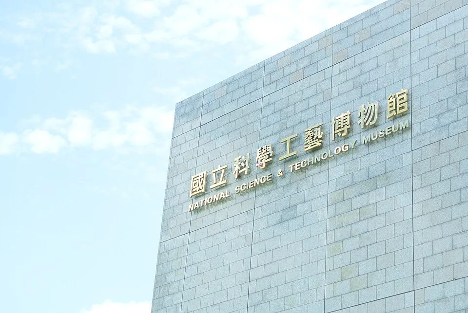
褒忠國中 雲端網 · CC BY 2.0
褒忠國中 雲端網 / CC BY 2.0
2014-05-29 10:12:33 · Resized proportionally to at most 960×720; encoded as WebP; no generative editing.
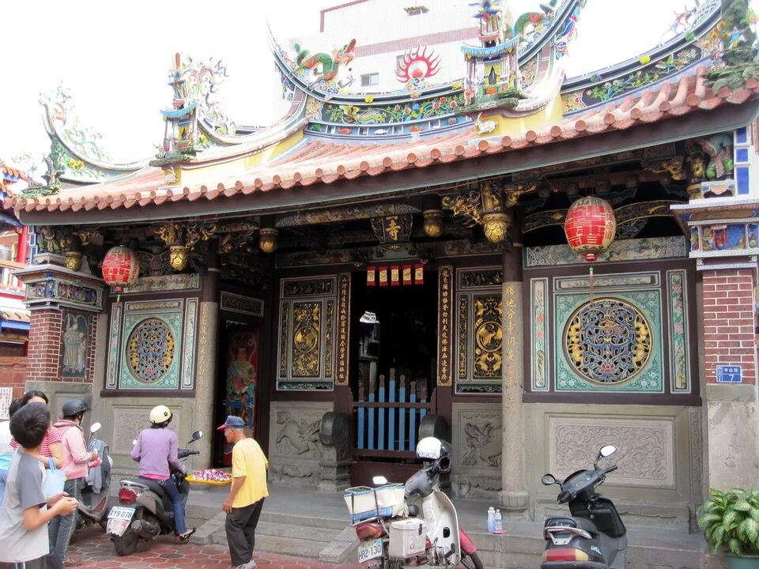
Jessepylin~commonswiki · CC BY-SA 3.0
Jessepylin~commonswiki / CC BY-SA 3.0
2010-03-07 15:09 · Resized proportionally to at most 960×720; encoded as WebP; no generative editing.
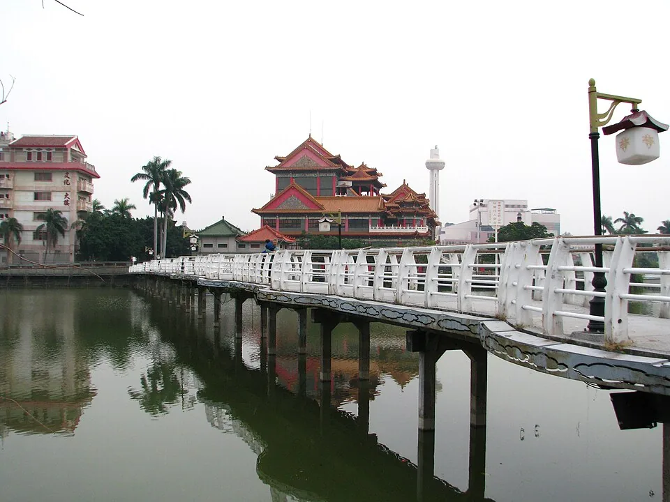
Pppighil · CC BY-SA 3.0
Pppighil / CC BY-SA 3.0
2013-02-07 11:42:52 · Resized proportionally to at most 960×720; encoded as WebP; no generative editing.
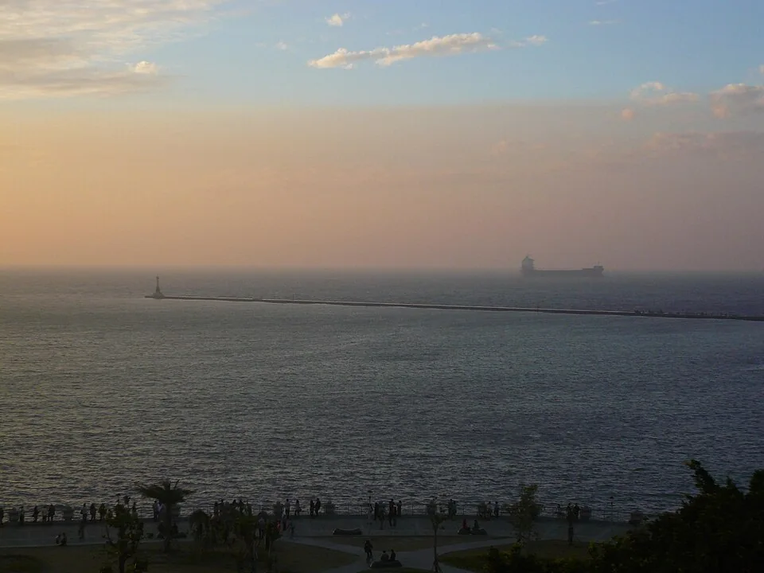
Pilzland · CC BY-SA 3.0
Pilzland / CC BY-SA 3.0
2013-01-31 17:06:54 · Resized proportionally to at most 960×720; encoded as WebP; no generative editing.
元創金屬科技有限公司 from TAIWAN · CC BY-SA 2.0
元創金屬科技有限公司 from TAIWAN / CC BY-SA 2.0
2013 · Resized proportionally to at most 960×720; encoded as WebP; no generative editing.
.jpg){kind=link}


_(27228557209).jpg){kind=link}


.jpg){kind=link}


_2014-05-29.jpg){kind=link}


.jpg){kind=link}